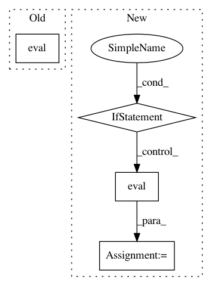

b95fcf7f52aca8ad0b1afb3cfc64c8eed534fafe,tests/keras/backend/backend_test.py,TestBackend,test_eye,#TestBackend#,157
Before Change
backend.set_learning_phase(2)
def test_eye(self):
zth = KTH.eval(KTH.eye(3))
ztf = KTF.eval(KTF.eye(3))
assert zth.shape == ztf.shape
assert_allclose(zth, ztf, atol=1e-05)
After Change
k.set_learning_phase(2)
def test_eye(self):
z_list = [k.eval(k.eye(3)) for k in BACKENDS]
assert_list_pairwise(z_list)
def test_linear_operations(self):
check_two_tensor_operation("dot", (4, 2), (2, 4), BACKENDS)
In pattern: SUPERPATTERN
Frequency: 4
Non-data size: 4
Instances
Project Name: keras-team/keras
Commit Name: b95fcf7f52aca8ad0b1afb3cfc64c8eed534fafe
Time: 2017-07-29
Author: me@taehoonlee.com
File Name: tests/keras/backend/backend_test.py
Class Name: TestBackend
Method Name: test_eye
Project Name: keras-team/keras
Commit Name: 94dbc3042f5a85b399f5ce2859d4e8fbafd235b9
Time: 2017-07-06
Author: me@taehoonlee.com
File Name: tests/keras/backend/backend_test.py
Class Name:
Method Name: check_single_tensor_operation
Project Name: keras-team/keras
Commit Name: b95fcf7f52aca8ad0b1afb3cfc64c8eed534fafe
Time: 2017-07-29
Author: me@taehoonlee.com
File Name: tests/keras/backend/backend_test.py
Class Name: TestBackend
Method Name: test_gather
Project Name: keras-team/keras
Commit Name: 94dbc3042f5a85b399f5ce2859d4e8fbafd235b9
Time: 2017-07-06
Author: me@taehoonlee.com
File Name: tests/keras/backend/backend_test.py
Class Name:
Method Name: check_two_tensor_operation